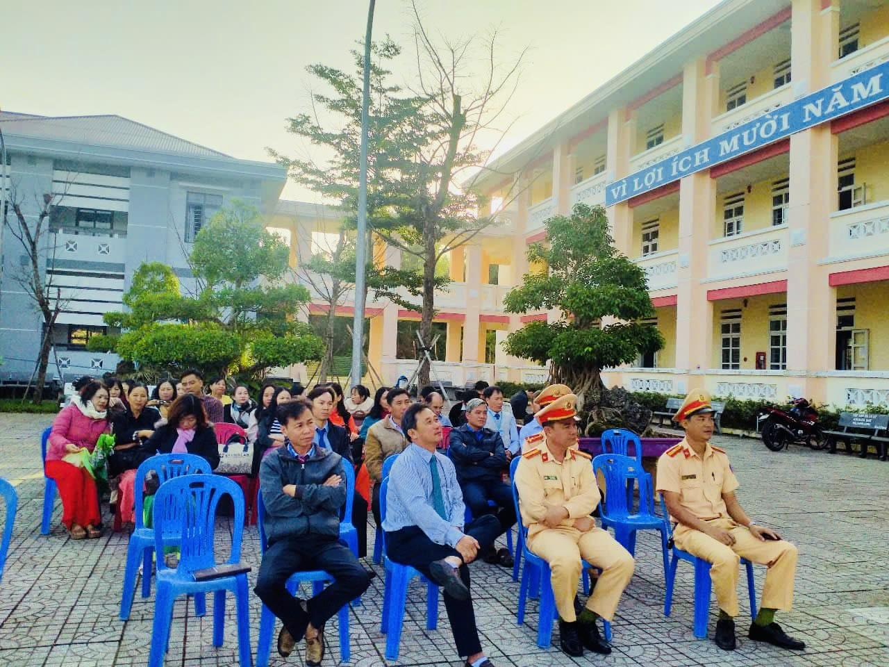
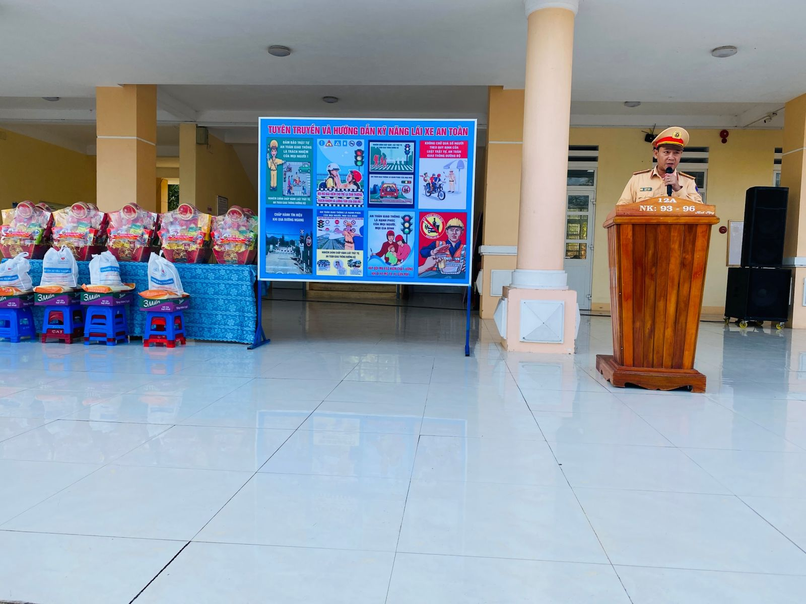
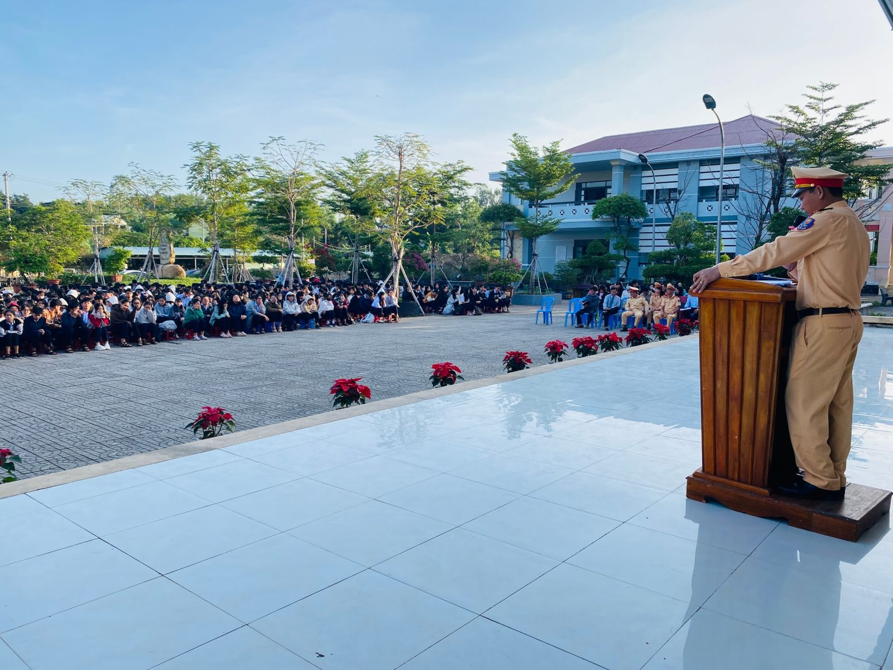
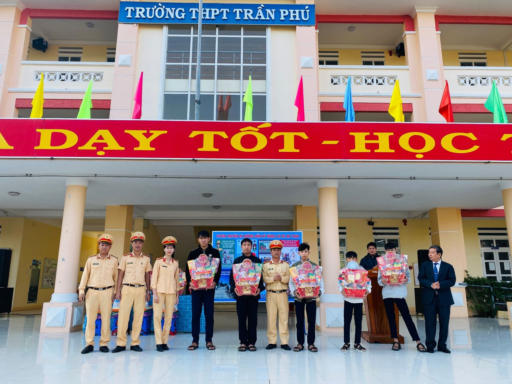

Sáng ngày 20 tháng 01 năm 2025 tại sân trường THPT Trần Phú diễn ra buổi tuyên truyền, phổ biến luật Trật tự an toàn giao thông do Đoàn trường phối hợp với Công an huyện Tuy An tổ chức.
Đến dự chương trình có quý thầy cô trong Ban lãnh đạo, quý thầy cô giáo và toàn thể học sinh nhà trường.
Về phía công an huyện Tuy An tham dự có:
- Thiếu tá Lê Duy Khánh- đội trưởng đội CSGT-TT Công an huyện Tuy An
- Thiếu tá Lê Đức Thắng- cán bộ đội CSGT-TT
- Thiếu tá Nguyễn Duy Quang- cán bộ đội CSGT-TT
- Thượng úy Nguyễn Thị Phi Yến- cán bộ đội CSGT-TT
Nội dung tuyên truyền, phổ biến Luật an toàn giao thông và nghị định 168/2024/NĐ-CP ngày 26/12/2024 của Chính phủ đến toàn thể giáo viên, công nhân viên chức và tất cả học sinh của trường.
Ban giám hiệu, giáo viên và các cán bộ công an huyện Tuy An.
Thiếu tá Lê Đức Thắng - Cán bộ đội CSGT-TT tuyên truyền luật ATGT.
Giáo viên và học sinh chú ý lắng nghe
Ngoài ra tại buổi tuyên truyền, đội Cảnh sát giao thông, trật tự huyện Tuy An trao 10 suất quà cho 10 em học sinh có hoàn cảnh khó khăn vượt khó học tốt trị giá 5.000.000 đồng.
Lãnh đạo nhà trường cùng cán bộ công an trao quà cho học sinh có hoàn cảnh khó khăn.
Buổi tuyên truyền đã giúp cho các em nhận thức một cách sâu sắt hơn về Luật trật tự an toàn giao thông và nghị định 168/2024/NĐ-CP để các em tham gia giao thông được an toàn hơn và đặc biệt trong dịp Tết nguyên đán Ất Tỵ năm 2025.